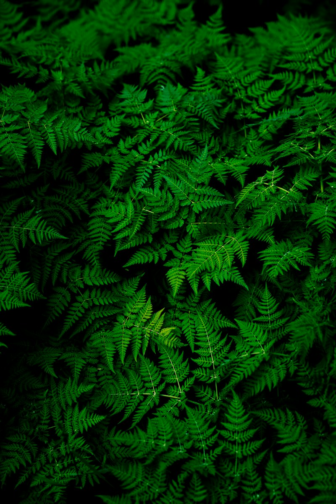

C · Margin Night
Margin, evolved for dark: serif post text, and an annotation gutter that labels sections, holds result times and states, and numbers the Instagram steps.
9:41
1 Choose
2 Write
3 Review
Post
A little color from today's walk. The city always leaves something worth noticing.
Saved on this device
Photos
 1
1
2Versions
X
Uses the shared post
Bluesky
Own caption
“Poppies along the reservoir path…”
Instagram
Uses the shared post · you finish it there
Review post
9:41
A little color from today's walk.
2 photos · the version you reviewed
21:14
X
Published
@alexdemo · confirmed by X
View post
21:14
Bluesky
Not published
Couldn't connect before sending. Nothing was posted.
Retry Bluesky
Sends to Bluesky only. X won't post again.
Next
Instagram
Ready to share
Photos and caption prepared. You publish it in Instagram.
Finish in Instagram
9:41
Ready to sharethen Handed off, then Marked posted
Nothing is on Instagram until you publish it there.
1
Copy the caption
A little color from today's walk. The city always leaves something worth noticing.
Copy caption
2
Save the photos, in order
12
Save 2 photos
3
Post it in Instagram
New feed post, photos 1 then 2, paste the caption, check the account, publish.
Open Instagram
Opening it doesn't post anything.I've posted it
Look
Indigo night ground, warm paper text in Literata, periwinkle annotations and primary, Barlow for controls.
Ground#13131CRaised#1D1D29Text#EEEAE0Annotation / primary#B5B2FF
Tradeoffs
Writing feels most personal here, but the gutter costs about 90dp of width. It must fold into inline labels at large font sizes and narrow screens. Indigo with periwinkle edges toward the rejected plum family.